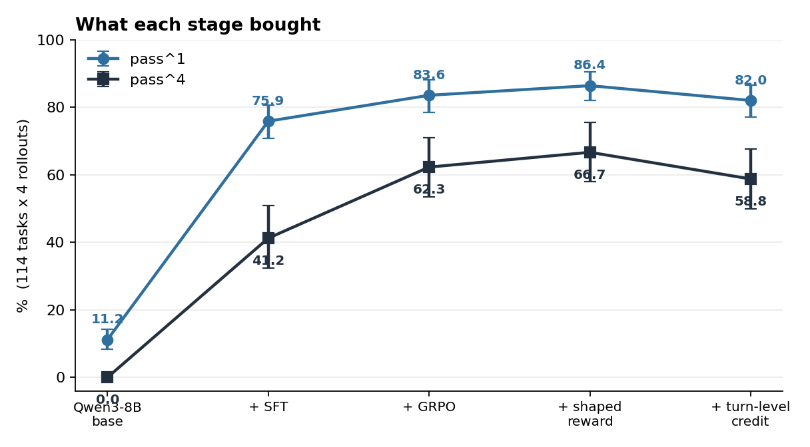
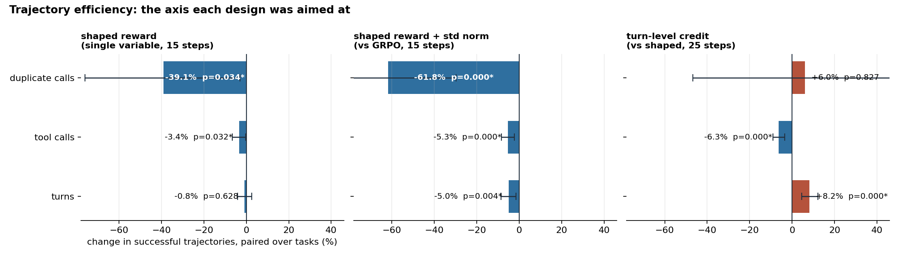
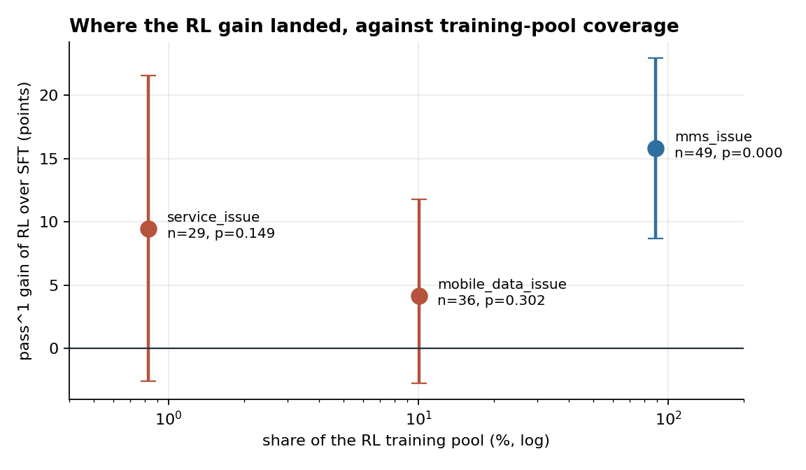

agent 读策略手册、调十三个后端 API 来诊断手机的连接故障，但任务期望的动作里 76% 必须由顾客本人完成，在一台 agent 碰不到的手机上——它只能把一个模拟用户讲明白。τ² 把这叫 dual control，也正是它让 turn-level credit assignment 在这里成为一个真问题：不同的轮次做的是不同的事。奖励全程序化，R = Π(env_assertions) 是一串确定性 Python 断言的乘积，全程没有 LLM judge。
114 个任务 × 4 次 rollout，协议在第一次跑之前就冻结

| pass^1 | pass^4 | 协议错误 | 平均轮数 | |
|---|---|---|---|---|
| Qwen3-8B 基座 | 11.2% | 0.0% | 62.4% | 22.9 |
| + SFT | 75.9% | 41.2% | 0.3% | 17.7 |
| + GRPO | 83.6% | 62.3% | 0.2% | 16.8 |
| + shaped reward | 86.4% | 66.7% | 0.4% | 16.6 |
| + turn-level credit | 82.0% | 58.8% | 0.0% | 17.6 |
pass^k 是 τ² 自己的指标：抽 k 次全部通过的概率。协议见
docs/eval_protocol.md，
写在第一次跑之前，之后没有因为看到结果而调过。
冷启动、停止轮次，以及唯一让 RL 动起来的那个改动
基座模型 62.4% 的工具返回是 Tool 'X' not found：它在调属于顾客手机的那三十个工具，而自己只有十三个。先诊断出这一点，才定下 SFT 的目标——教师按预注册的门槛筛选（Qwen3-14B：65.8% 协议错误、3.3% 轨迹接受率；DeepSeek：0.0%、71.8%，在同一个家族里放大规模并不能解决这种混淆），三轮采样、拒绝过滤加去重，得到 784 条轨迹、249 个任务，其中 698 条训练、86 条按任务留出，loss 只落在 assistant span（11.6% 的 token）。协议错误 62.4% → 0.3%。
这批教师轨迹已发布为
cy-330/tau2-telecom-agent-sft，
与冻结的评测集零重叠。
assistant span 上的平均 token 熵，三个 epoch 依次是 0.414 / 0.376 / 0.357，基座是 0.281——第三个 epoch 仍高于基座，说明策略还留着给 GRPO 探索的余地。训练 loss 回答不了这个问题：在一个输出分布已经退化的模型里，它照样一直降。
veRL 全参数 PPO 的默认值 1e-6 作用在 rank-16 的 LoRA adapter 上，合并后权重最多移动 9.3e-07；同一个 adapter 在 SFT 的 1e-4 下移动 3.5e-03，相差四千倍。改到 2e-5 之后，同一份配置从「+3.3 点、区间跨零」变成 +8.1 点，p=0.0012。
RL 相对 SFT checkpoint 是 +7.7 到 +10.5 点（任务级配对 bootstrap，p<0.005），pass^4 41.2% → 66.7%。它买到的是稳定性，不是单次能力。
一个从轨迹里挖出来，一个被自己的实验证伪

每一条成功轨迹都命中了 100% 的期望动作，所以 action hit 在成功之间不携带信息；而 65.8% 的任务四次 rollout 全部成功，在那里 group-relative 的 advantage 恒为零。于是两项被构造成不相交的：0.2·(1−R)·hit 把失败彼此区分开，0.3·R·eff 在各自 group 内按速度给成功排序。先试过绝对形式 min(1, 15/T)，它在全通过 group 里的平均绝对 advantage 是 0.012，而混合 group 是 0.25–0.50，会被直接淹掉；换成组内归一化后回到 0.105。
十五步时，在 pass^1 相同的前提下，成功轨迹短 5.0%、重复工具调用少 61.8%（110 个任务配对，p<0.001）。
奖励该放在轨迹的哪个位置，是离线回放 430 条轨迹决定的：期望动作完成的相对位置中位数是 0.54，轨迹的第一个十分位里 1953 次只有 1 次命中，落在最后一轮的只有 4.4%。把终局奖励往回折扣因此是错的方向，所以 credit 改成局部向前传播。设计守住两个恒等式——奖励行和与 baseline 逐字节相同，β=0 逐比特复现 baseline——由性质测试钉住，并在每个训练步重新检查（25 步内漂移 < 1.4e-07）。这让它成为整个项目里唯一真正单变量的对比。
pass^1 没有提升，轨迹反而长了 8.2%（p<0.0001）。分解之后原因清楚：多出来的每一轮都是在和顾客说话（+11.3%，p<0.0001），后端工具轮次完全没动（+1.0%，p=0.54）。dual control 把 76% 的期望动作放在用户消息里，而那些 token 不带梯度，于是 credit 被回溯到提出要求的那个 assistant 轮次——一个消息轮次。策略泛化出了错误的不变量：不是「在这里说这句」，而是「多产出面向顾客的轮次」。
训练奖励没有上升（0.620 对 baseline 的 0.624），排除了 reward hacking。目标函数从未被钻空子，是归因规则把梯度放错了地方。
训练池和评测集对「telecom 是什么」的看法差得很远

RL 池（full ∖ base，2171 个任务）里 mms_issue 占 89.1%，在评测集里只占 43.0%；service_issue 在池里只占 0.8%（总共 18 个任务），在评测集里却占 25.4%。按 issue 切开看结果：mms +15.8 点，p<0.001；mobile_data +4.2，p=0.30（SFT 之后已经饱和在 90.3%）；service +9.5，p=0.15。
先定噪声地板，再谈结论
scripts/rl_stats.py 从保存的运行重算这里的每一个数。从策略梯度的 baseline 定理，推到 PPO 的 clip、GRPO 的 group baseline、DAPO 与 Dr. GRPO 的修正，再到多轮场景的 observation masking、credit assignment、RLVR 奖励设计与训练基础设施。
arm 0 到 arm 4 的每一次运行、每一张表、每一处更正，按日期排列，包括被推翻的结论和它们是怎么被推翻的。
114 个任务、4 次 rollout、按任务类型切分，用户模拟器与温度写死；以及为什么统计要按任务而不是按 rollout 配对。
SFT 阶段用的教师轨迹，784 条、249 个任务，与冻结评测集零重叠，已发布在 Hugging Face。